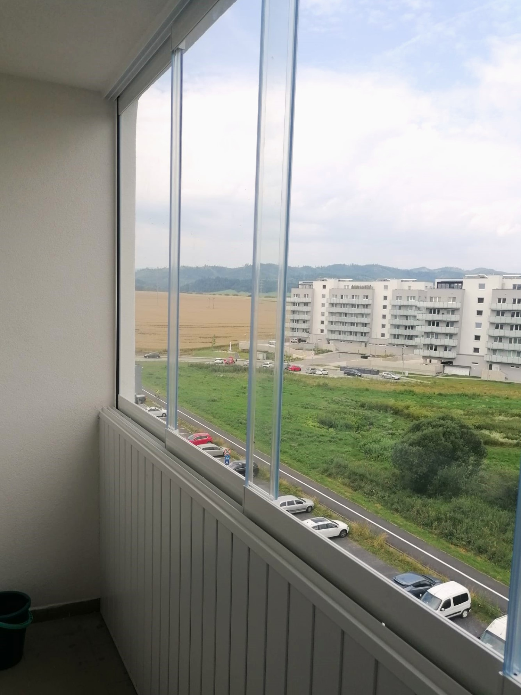
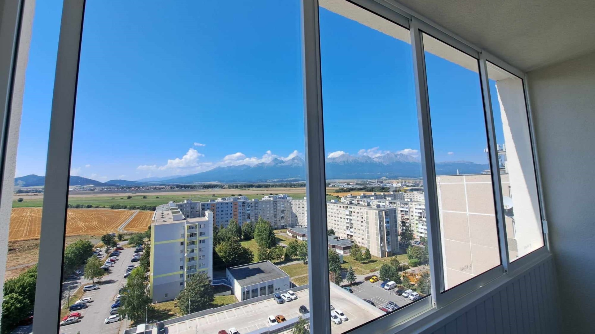
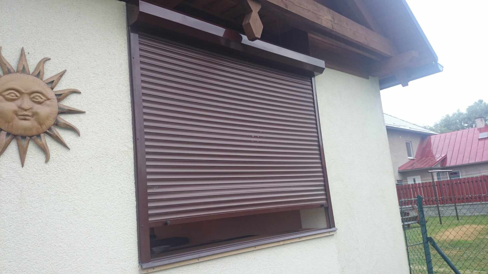
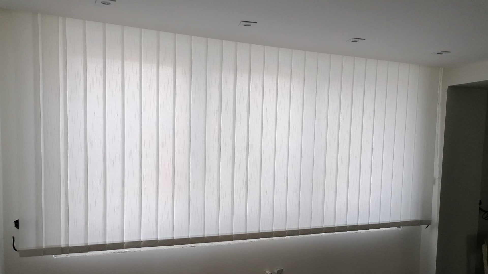
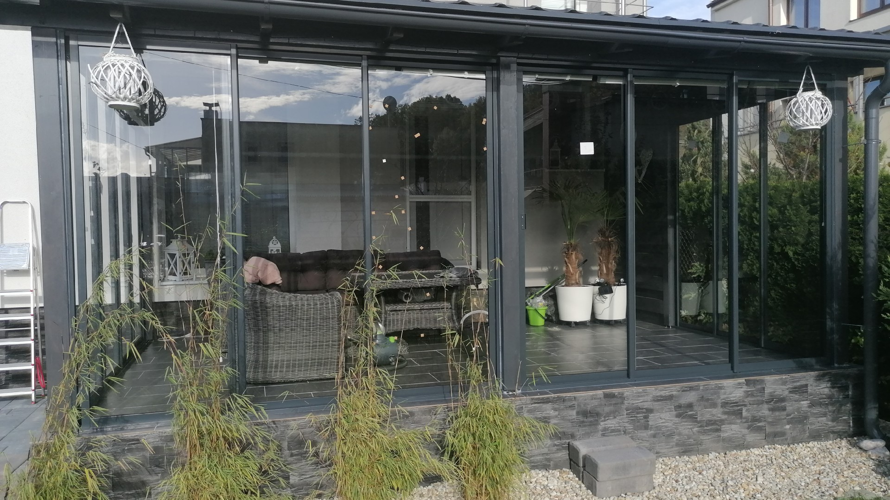
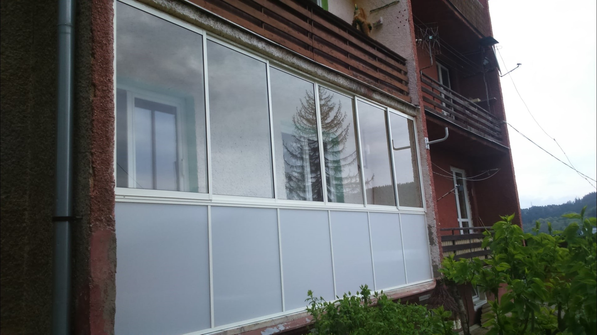
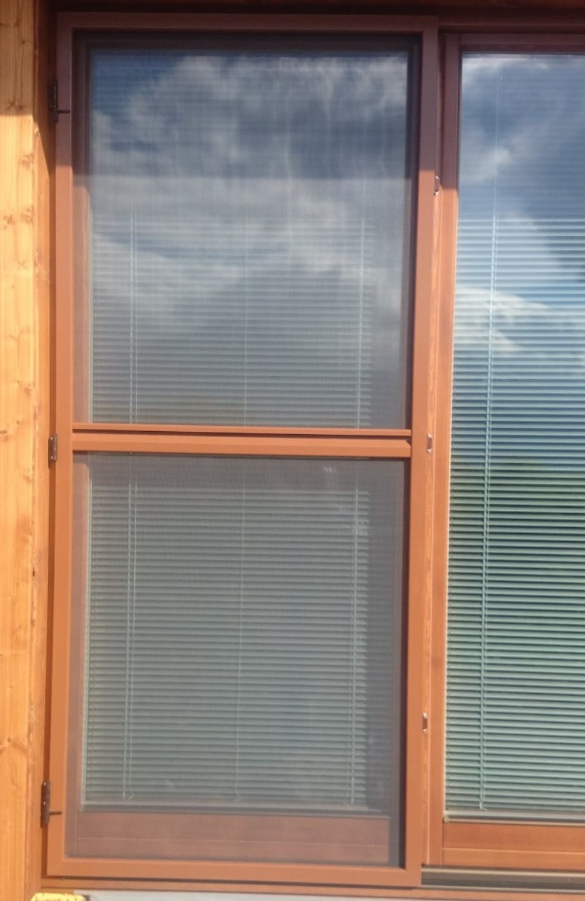

Naše služby
Komplexné riešenia pre váš balkón a okná s garantovanou kvalitou.
Bezrámové presklenia
Moderné bezrámové presklenia balkónov a loggií, ktoré rozšíria váš obytný priestor a ochránia vás pred vetrom a počasím. Minimalistický dizajn zachováva výhľad a maximálne presvetlí priestor.
- Bezrámové posuvné systémy
- Bezpečnostné kalené sklo
- Minimalistický dizajn bez rámov
- Rýchla a čistá montáž


Rámové presklenia
Stabilné rámové presklenia s hliníkovými profilmi. Ideálne riešenie pre balkóny, terasy aj lodžie, kde oceníte pevnosť, tesnosť a možnosť vetrania.
- Hliníkové profily s dlhou životnosťou
- Spoľahlivé tesnenie a izolácia
- Estetické a bezpečné riešenie
Rolety
Rolety na mieru pre maximálne súkromie a tepelný komfort. Ponúkame vnútorné aj vonkajšie riešenia v rôznych farbách a materiáloch.
- Vnútorné rolety a zatemnenie
- Vonkajšie rolety proti slnku
- plastové aj hliníkové
- Možnosť manuálneho ovládania


Žalúzie
Vonkajšie aj vnútorné žalúzie pre reguláciu svetla, tieňa a súkromia. Moderné riešenia s dôrazom na dizajn a praktickosť.
- Vnútorné žalúzie na mieru
- Výber farieb a lamiel
- Možnosť motorického ovládania
Terasy
Riešenia pre komfortné terasy a exteriéry. Navrhneme a zrealizujeme praktické presklenie aj tienenie, ktoré predĺži sezónu oddychu.
- Terasové presklenie na mieru
- Tienenie
- Odolné materiály do každého počasia
- Komplexná montáž a servis


Balkónové zábradlia
Moderné balkónové zábradlia s dôrazom na bezpečnosť a estetiku. Vyberte si z rôznych výplní a farieb.
- Hliníkové konštrukcie
- Sklenené aj plné výplne
- Dlhá životnosť a jednoduchá údržba
- Realizácia na mieru
Siete proti hmyzu
Kvalitné siete do okien a dverí. Užite si čerstvý vzduch bez obáv z hmyzu a komárov. Jednoduché ovládanie a dlhá životnosť.
- Siete do okien aj dverí
- Posuvné a rolovacie systémy
- Nenápadný dizajn
- Rýchla montáž

Potrebujete poradiť?
Kontaktujte nás a my vám pomôžeme vybrať najlepšie riešenie pre váš domov.